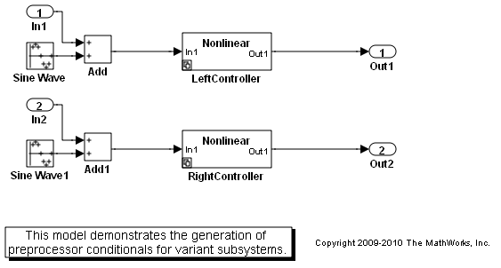
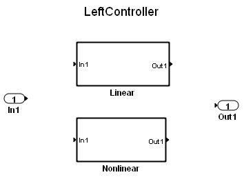
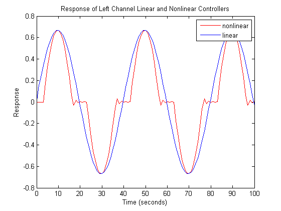

Variant Subsystems Controlled by C Preprocessor Conditionals
This demonstration illustrates Simulink® variant subsystems and how to use C preprocessor conditionals to control which child subsystem of the variant subsystem is active in the generated code produced by the Real-Time Workshop®.
Contents
Overview of Variant Subsystems
A Variant Subsystem block contains two or more child subsystems where one child is active during model execution. The active child subsystem is referred to as the active variant. You can programmatically switch the active variant of the Variant Subsystem block by changing values of variables in the base workspace, or by manually overriding variant selection using the Variant Subsystem block dialog. The active variant is programmatically wired to the Inport and Outport blocks of the Variant Subsystem by Simulink during model compilation.
To programmatically control variant selection, A Simulink.Variant object is associated with each child subsystem in the Variant Subsystem block dialog. Simulink.Variant objects are created in the MATLAB® base workspace. These objects have a property named Condition, an expression, which evaluates to a boolean value and is used to determine the active variant child subsystem.
When you generate code, you can either generate code for the active variant, or generate code for all of the variants of a Variant Subsystem block and defer the choice of active variant until it is time to compile the generated code.
Specifying Variants for a Subsystem Block
Opening the demo model rtwdemo_preprocessor_subsys will run the PostLoadFcn defined in the "File: ModelProperties: Callbacks" dialog. This will populate the base workspace with the variables for the Variant Subsystem blocks.
open_system('rtwdemo_preprocessor_subsys')
  The LeftController variant subsystem contains two child subsystems Linear and Nonlinear. The LeftController/Linear child subsystem executes when Simulink.Variant object LINEAR evaluates to true, and the LeftController/Nonlinear child subsystem executes when Simulink.Variant object NONLINEAR evaluates to true.
Simulink.Variant's are specified for the LeftController subsystem by right-clicking on the LeftController subsystem and selecting Subsystem Parameters, which will open the LeftController subsystem block dialog.
open_system('rtwdemo_preprocessor_subsys/LeftController');
The LeftController subsystem block dialog creates an association between the Linear and Nonlinear subsystems with two Simulink.Variant objects LINEAR and NONLINEAR, which exist in the base workspace. These objects have a property named Condition, an expression, which evaluates to a boolean value and determines the active variant child subsystem (Linear or Nonlinear). The condition is also shown in the subsystem block dialog. In this example, the conditions of LINEAR and NONLINEAR are 'MODE == 0' and 'MODE == 1', respectively.
The Simulink.Variant objects of this example have been created in the base workspace.
LINEAR = Simulink.Variant; LINEAR.Condition = 'MODE==0'; NONLINEAR = Simulink.Variant; NONLINEAR.Condition = 'MODE==1';
Specifying a Variant Control Variable
The variant objects permit easy reuse of arbitrarily complex conditions throughout a model. Multiple Variant Subsystem blocks can use the same Simulink.Variant objects, permitting you to gang and toggle the activation of subsystem variants as a set. You can toggle the set prior to simulation by changing the value of MODE in the MATLAB environment or when compiling the generated code, as explained in the next section. In this example, LeftController and RightController reference the same variant objects, so that you can toggle them simultaneously.
The nonlinear controller subsystems implement hysteresis, while the linear controller subsystems act as simple low-pass filters. Open the subsystem for the left channel. The subsystems for the right channel are similar.
The generated code accesses the variant control variable MODE as a user-defined macro. In this example, rtwdemo_importedmacros.h supplies MODE. Within the MATLAB environment, you specify MODE using a Simulink.Parameter object. Its value will be ignored when generating code including preprocessor conditionals. However, the value is used for simulation. The legacy header file specifies the value of the macro to be used when compiling the generated code, which ultimately activates one of the two specified variants in the embedded executable.
MODE = Simulink.Parameter; MODE.Value = int32(1); MODE.RTWInfo.StorageClass = 'Custom'; MODE.RTWInfo.CustomStorageClass = 'ImportedDefine'; MODE.RTWInfo.CustomAttributes.HeaderFile = 'rtwdemo_importedmacros.h';
Simulating the Model with Different Variants
Because you set the value of MODE to 1, the model uses the nonlinear controllers during simulation.
sim('rtwdemo_preprocessor_subsys')
youtnl = yout;
If you change the value of MODE to 0, the model uses the linear controllers during simulation.
MODE.Value = int32(0);
sim('rtwdemo_preprocessor_subsys')
youtl = yout;
You can plot and compare the response of the linear and nonlinear controllers:
figure('Tag','CloseMe'); plot(tout, youtnl.signals(1).values, 'r-', tout, youtl.signals(1).values, 'b-') title('Response of Left Channel Linear and Nonlinear Controllers'); ylabel('Response'); xlabel('Time (seconds)'); legend('nonlinear','linear') axis([0 100 -0.8 0.8]);
Using C Preprocessor Conditionals
This demo model has been configured to generate C preprocessor conditionals. Selecting Build Model from the Tools/Real-Time Workshop menu item will generate code for the model.
Code generation of preprocessor conditionals is active when
- Inline Parameters is selected on the Optimization pane of the Configuration Parameters dialog box.
- Real-Time Workshop Embedded Coder target is selected on the Real-Time Workshop pane of the Configuration Parameters dialog box.
- The Override variant conditions and use following variant is not selected on the Variant Subsystem block parameter dialog box.
and
- Generate preprocessor conditionals in the Real-Time Workshop/Interface pane of the Configuration Parameters dialog is set to Use local settings and you have selected Generate preprocessor conditionals on the Variant Subsystem block parameter dialog box, or
- Generate preprocessor conditionals in the Real-Time Workshop/Interface pane of the Configuration Parameters dialog is set to Enable all. In this case, preprocessor conditionals will be generated for all Variant Subsystem blocks that have not selected the Override variant conditions and use following variant Variant Subsystem parameter dialog box.
The Real-Time Workshop code generation report contains sections in the Code Variants report dedicated to the subsystems that have variants controlled by preprocessor conditionals.
In this demo, the generated code includes references to the Simulink.Variant objects LINEAR and NONLINEAR, as well as the definitions of macros corresponding to those variants. Those definitions depend on the value of MODE, which is supplied in an external header file rtwdemo_importedmacros.h. The active variant is determined by using preprocessor conditionals (#if) on the macros (#define) LINEAR and NONLINEAR.
The macros LINEAR and NONLINEAR are defined in the generated rtwdemo_preprocessor_subsys_types.h, header file:
#ifndef LINEAR #define LINEAR (MODE == 0) #endif
#ifndef NONLINEAR #define NONLINEAR (MODE == 1) #endif
In the generated code, the code related to the variants is guarded by C preprocessor conditionals. For example, in rtwdemo_preprocessor_subsys.c, the calls to the step and initialization functions of each variant are conditionally compiled:
/* Outputs for atomic SubSystem: '<Root>/LeftController' */
#if LINEAR
/* Output and update for atomic system: '<S1>/Linear' */
#elif NONLINEAR
/* Output and update for atomic system: '<S1>/Nonlinear' */
#endifClose the model, figure, and workspace variables from the demo.
bdclose('rtwdemo_preprocessor_subsys') close(findobj(0,'Tag','CloseMe')); clear LINEAR NONLINEAR MODE clear tout yout youtl youtnl